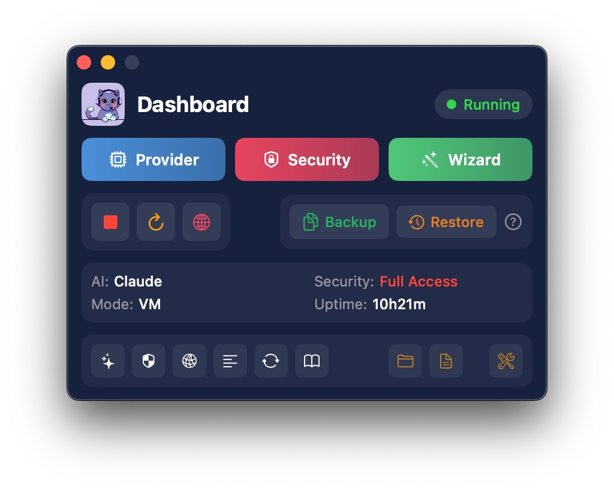

Features & Screenshots
A native macOS utility for setting up and managing OpenClaw automation. No terminal required.
Dashboard
The main control panel lives in your menu bar. See status at a glance — which provider is active, security level, uptime, and gateway state. One click to access any setting.
KatClaw dashboard — menu bar app with full status overview
Guided Setup Wizard
Step-by-step installation with clear explanations. Choose your deployment mode, configure providers, and set security — all through a visual interface.
- Direct macOS — recommended for most users. Full performance, instant access.
- Virtual Machine — advanced option for sandboxed, isolated environments.

Setup wizard — guided installation with clear options
AI Provider Setup
Choose from 8 supported providers — including OpenRouter (recommended), Claude, GPT, Gemini, DeepSeek, and more. Step-by-step instructions for each provider. Switch providers anytime with one click.
- OpenRouter — one API key, access to all major models
- Free options — Gemini, Kimi, and Local LLM require no payment
- Local LLM — run models entirely offline via LM Studio or Ollama
Provider configuration — choose and switch providers with built-in setup guides
Security Controls
Three security levels give you full control over what automation can do on your system:
- Conservative (default) — no shell commands allowed. Safest option.
- Moderate — only explicitly allowlisted commands can run.
- Full Access — unrestricted. For advanced users who understand the risks.
Security settings — you decide exactly what automation can access
Command Approval Popup
In Moderate mode, when your agent tries to run a command that's not on the allowlist, KatClaw shows a native macOS approval popup. You decide in real-time:
- Allow Once — run the command this time only
- Always Allow — add to your allowlist permanently
- Deny — block the command
Real-time command approval — you're always in control
Backup & Restore
One-click backup of your entire agent configuration — providers, security settings, channels, and workspace. Restore on a new Mac or roll back after an update.
- Auto-backup — automatically saves your config whenever the gateway starts
- Manual backup — create a snapshot anytime from the Dashboard
- Full restore — pick any backup to restore your complete setup
Backup & Restore — protect your agent configuration with one click
🔐 Local-Only Architecture
KatClaw runs entirely on your Mac. No cloud servers, no hosted services, no data collection. Your files, configurations, and task logs never leave your machine. KatClaw is a configuration utility — it manages OpenClaw settings, providers, security, and backups through a clean native interface.